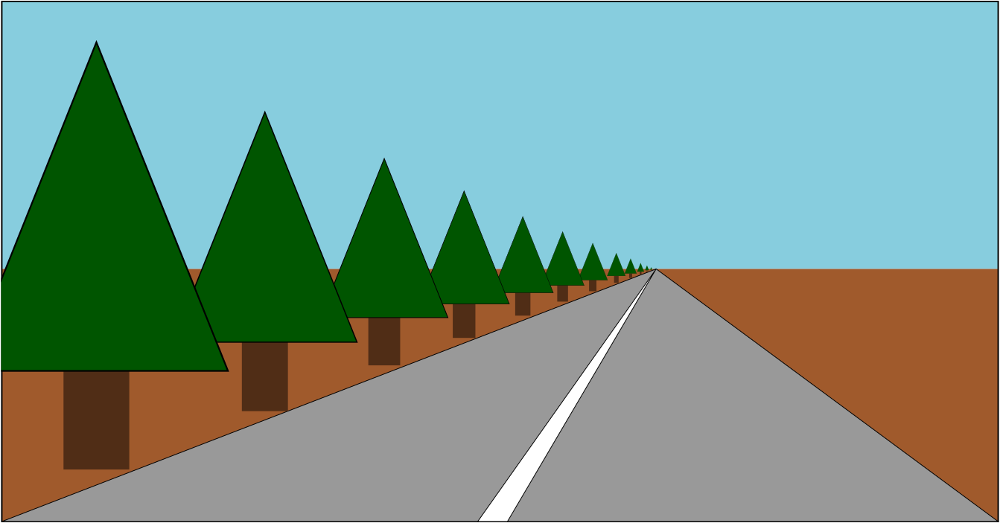

WebGL - La perspective
Cet article est la suite d'une série de posts consacrés à WebGL. Le premier démarrait avec les bases et le précédent nous faisait entrer dans les projections 3D orthographiques. Si vous ne les avez pas lus vous voulez peut-être y jeter un oeil d'abord.
Dans l'article précédent on a vu comment faire de la 3D mais cette 3D n'avait pas de perspective. C'était ce qu'on appelle des vues "orthographiques" qui ont leur utilité mais n'est pas ce que les gens veulent en général quand on dit "3D".
Pour ça on a besoin de perspective. Qu'est-ce que la perspective ? C'est ce qui fait que ce qui est loin apparaît plus petit.

En voyant cet exemple on voit que ce qui est à plus grande distance est dessiné en plus petit. Avec notre exemple habituel, une façon simple d'implémenter ceci serait de diviser les composantes X et Y de l'espace de projection, par Z.
Pensez-y comme ça : si on a une ligne de (10,15) à (20,15) elle a 10 unités de long. Dans notre exemple elle serait dessinée avec 10 pixels de long. Mais si on divise par Z :
Avec Z = 1 :
10 / 1 = 10 20 / 1 = 20 abs(10-20) = 10
Toujours 10 pixels de long. Si Z = 2 :
10 / 2 = 5 20 / 2 = 10 abs(5 - 10) = 5
5 pixels long. Z = 3 :
10 / 3 = 3.333 20 / 3 = 6.666 abs(3.333 - 6.666) = 3.333
Quand Z augmente, notre dessin deviendrait plus petit. Si on divise dans l'espace de projection on aura de meilleurs résultats parce que Z sera un nombre plus petit (-1 à 1). Si on avait un facteurDeFuite avec lequel multiplier Z avant de diviser X et Y, on pourrait ajuster cette réduction avec la distance...
Essayons ça. Changeons notre shader de vertex pour diviser par Z après avoir multiplié par notre facteurDeFuite.
<script id="shader-de-vertex-2d" type="x-shader/x-vertex">
...
uniform float u_facteurDeFuite;
...
void main() {
// Multiplie la position par la matrice
vec4 position = u_matrice * a_position;
// ajuste le z avec le facteur
float zDeDivision = 1.0 + position.z * u_facteurDeFuite;
// Divise x et y par z.
gl_Position = vec4(position.xy / zDeDivision, position.zw);
}
</script>
Le Z de l'espace de projection va de -1 à +1. J'ai ajouté 1 pour que zDeDivision aille de 0 à +2 * facteurDeFuite
On doit aussi renseigner ce facteurDeFuite dans le programme javascript
...
var emplacementFacteur = gl.getUniformLocation(programme, "u_facteurDeFuite");
...
var facteurDeFuite = 1;
...
function rendreScene() {
...
// Transmets la valeur du facteurDeFuite au programme en cours
gl.uniform1f(emplacementFacteur, facteurDeFuite);
// Appel de rendu
gl.drawArrays(gl.TRIANGLES, 0, 16 * 6);
Résultat :
Si ce n'est pas clair la valeur du "facteurDeFuite" peut être changée entre 1 et 0 sur le slider pour voir comment les choses étaient avant d'appliquer notre division par Z, c'est-à-dire en orthographique.

Il se trouve que WebGL prend les valeurs x, y, z, w assignées à gl_Position dans notre shader de vertex et divise par w automatiquement.
On peut le constater facilement en changeant le shader, et au lieu de faire la division nous-même, mettre
zDeDivision dans gl_Position.w.
<script id="shader-de-vertex-2d" type="x-shader/x-vertex">
...
uniform float u_facteurDeFuite;
...
void main() {
// Multiplie la position par la matrice
vec4 position = u_matrice * a_position;
// Adjust the z to divide by
float zDeDivision = 1.0 + position.z * u_facteurDeFuite;
// Divise x, y et z par zDeDivision
gl_Position = vec4(position.xyz, zDeDivision);
}
</script>
et c'est exactement pareil
Pourquoi WebGL divise automatiquement par w ? Parce que maintenant, avec un peu plus de magie des matrices, on peut utiliser une autre matrice pour copier z dans w. Une matrice comme ça :
1, 0, 0, 0, 0, 1, 0, 0, 0, 0, 1, 1, 0, 0, 0, 0,
Chaque colonne peut être vue comme :
nouveauX = x * 1 +
y * 0 +
z * 0 +
w * 0 ;
nouveauY = x * 0 +
y * 1 +
z * 0 +
w * 0 ;
nouveauZ = x * 0 +
y * 0 +
z * 1 +
w * 0 ;
nouveauW = x * 0 +
y * 0 +
z * 1 +
w * 0 ;
ce qui simplifié, donne :
nouveauX = x; nouveauY = y; nouveauZ = z; nouveauW = z;
On peut ajouter le 'plus 1' qu'on avait avant dans cette matrice puisqu'on sait que le w est toujours 1
1, 0, 0, 0, 0, 1, 0, 0, 0, 0, 1, 1, 0, 0, 0, 1,
ce qui change nouveauW
nouveauW = x * 0 +
y * 0 +
z * 1 +
w * 1 ;
et puisque w = 1 c'est en fait
nouveauW = z + 1;
Finalement on peut ramener notre facteurDeFuite dans la matrice
1, 0, 0, 0, 0, 1, 0, 0, 0, 0, 1, facteurDeFuite, 0, 0, 0, 1,
ce qui donne
nouveauW = x * 0 +
y * 0 +
z * facteurDeFuite +
w * 1 ;
c'est-à-dire
nouveauW = z * facteurDeFuite + 1;
Modifions le programme pour utiliser ces matrices.
Ramenons le shader de vertex. C'est toujours la version simple
<script id="shader-de-vertex-2d" type="x-shader/x-vertex">
uniform mat4 u_matrice;
void main() {
// Multiplie la position par la matrice
gl_Position = u_matrice * a_position;
...
}
</script>
Maintenant écrivons la fonction qui retourne une matrice où notre facteur passe dans W.
function matriceZversW(facteurDeFuite) {
return [
1, 0, 0, 0,
0, 1, 0, 0,
0, 0, 1, facteurDeFuite,
0, 0, 0, 1,
];
}
et on change le code pour l'utiliser
...
// Calcule les matrices
var matriceFuite =
matriceZversW(facteurDeFuite);
...
// Multiplie les matrices
var matrice = multiplierMatrices(matriceEchelle, rotationZMatrix);
matrice = multiplierMatrices(matrice, matriceRotationY);
matrice = multiplierMatrices(matrice, matriceRotationX);
matrice = multiplierMatrices(matrice, matriceDeplacement);
matrice = multiplierMatrices(matrice, matriceProjection);
matrice = multiplierMatrices(matrice, matriceFuite);
...
Le résultat est toujours identique
Tout ça pour montrer que diviser par Z donne la perspective et que WebGL fait ça automatiquement.
Mais il reste quelques soucis. Si on met Z à -100 on se retrouve avec quelque chose comme l'animation ci-dessous

Quest-ce qu'il se passe ? Pourquoi le F disparaît ? Tout comme WebGL tronque le X et le Y au-delà de -1 et +1 il tronque aussi le Z. Ce qu'on voit c'est le Z < -1.
Je pourrais entrer dans les détails pour résoudre ça mais vous pouvez déduire la solution comme on l'a fait dans les projections 2D. On a besoin de prendre Z, ajouter du déplacement et du changement d'échelle, et on peut ajuster tout ce qu'on veut entre -1 et +1.
Ce qui est génial c'est que tout ça peut être fusionné dans une seule matrice ! Mieux, plutôt qu'un 'facteur de fuite' on va plutôt prendre en entrée l'angle du champ de vision désiré et calculer le reste à partir de ça.
Voilà la fonction (champ de vision se dit field of view en anglais et son abréviation FOV est assez répendue dans le langage technique de différents domaines).
function projeterPerspective(FOVenRadians, aspect, limiteProche, limiteLoin) {
var f = Math.tan(Math.PI * 0.5 - 0.5 * FOVenRadians);
var portee = 1.0 / (limiteProche - limiteLoin);
return [
f / aspect, 0, 0, 0,
0, f, 0, 0,
0, 0, (limiteProche + limiteLoin) * portee, -1,
0, 0, limiteProche * limiteLoin * portee * 2, 0
];
};
Cette matrice va faire les conversions pour nous. Elle va ajuster les coordonnées dans l'espace de projection, elle va faire les opérations pour qu'on choisisse le FOV qu'on veut, et nous laisse choisir nos limites proche et lointaine. C'est comme s'il y avait un oeil ou une caméra à l'origine (0,0,0) et à partir des valeurs d'entrée elle calculait la matrice nécessaire pour que ce qui est proche du plan proche soit à z = -1 dans l'espace de projection, que ce qui est proche du plan lointain se retrouve à z = 1, et que ce qui est sur la plan proche à la moitié de la valeur FOV au-dessus ou au-dessous du centre se retrouve à Y = -1 et Y = 1 respectivement. Elle déduit la valeur de X en multipliant par la valeur aspect. L'aspect est généralement trouvé par le rapport largeur / hauteur de la zone d'affichage. Finalement, elle déduit comment changer l'échelle des objets avec Z pour que les objets loitains finissent à Z = 1.
Voilà un diagramme de la matrice en action
Cette forme qui ressemble à un cône à quatre faces, dans lequel les cubes tournent, s'appelle un "frustum" (en géométrie et en français la traduction est "tronc", mais elle n'est pas utilisée dans le langage de la 3D). C'est en fait ce volume qui forme l'espace de projection et à partir duquel la matrice fait ses calculs. Le plan proche définit la distance avec la caméra en-dessous de laquelle les objets seront tronqués, le plan loitain définit la distance au-delà de laquelle ils seront également tronqués (pratique car notre tampon de profondeur ne peut pas prendre de valeurs infinies). Mettez '23' pour la limite proche (zNear) et vous verrez le devant des cubes tronqué. Mettez '24' à la limite lointaine (zFar) et vous verrez l'arrière des cubes disparaître.
Il reste un dernier problème. Cette matrice suppose qu'il y a un observateur à (0,0,0) qui regarde dans la direction négative de l'axe Z, et que l'axe Y pointe vers le haut. Jusque là nos matrices ont fait des choses différentes. Pour que ça marche on doit placer les objets devant l'observateur.
On pourrait faire ça en déplaçant le F. On le dessinait à (45,150,0). Déplaçons-le à (-150,0,-360).
Maintenant on doit juste remplacer notre appel à projection2D par un appel à projeterPerspective
var aspect = canvas.clientWidth / canvas.clientHeight;
var matriceProjection =
projeterPerspective(FOVenRadians, aspect, 1, 2000);
var matriceDeplacement =
deplacer(deplacement[0], deplacement[1], deplacement[2]);
var matriceRotationX = tournerX(rotation[0]);
var matriceRotationY = tournerY(rotation[1]);
var matriceRotationZ = tournerZ(rotation[2]);
var matriceEchelle = changerEchelle(echelle[0], echelle[1], echelle[2]);
Voilà !
Reste à multiplier les matrices et on a de quoi choisir la taille de notre champ de vision et nos limites de profondeur. On n'en a pas encore fini mais cet article devient long. La suite : les caméras.